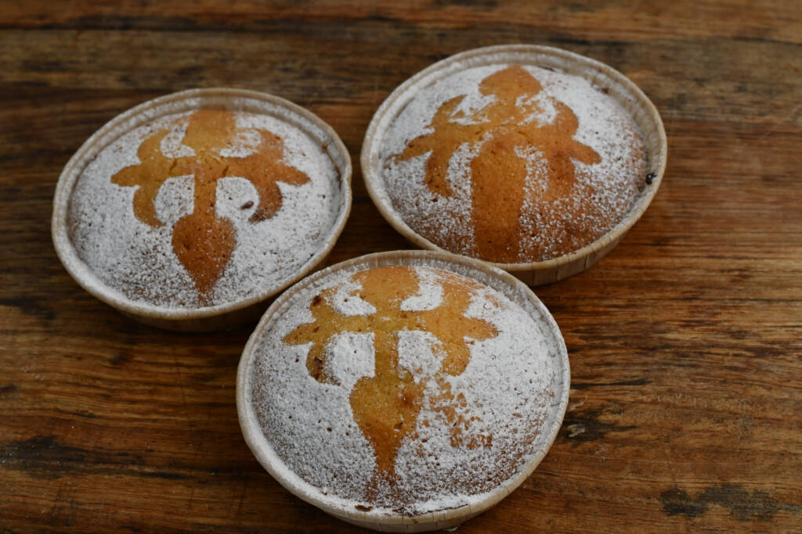
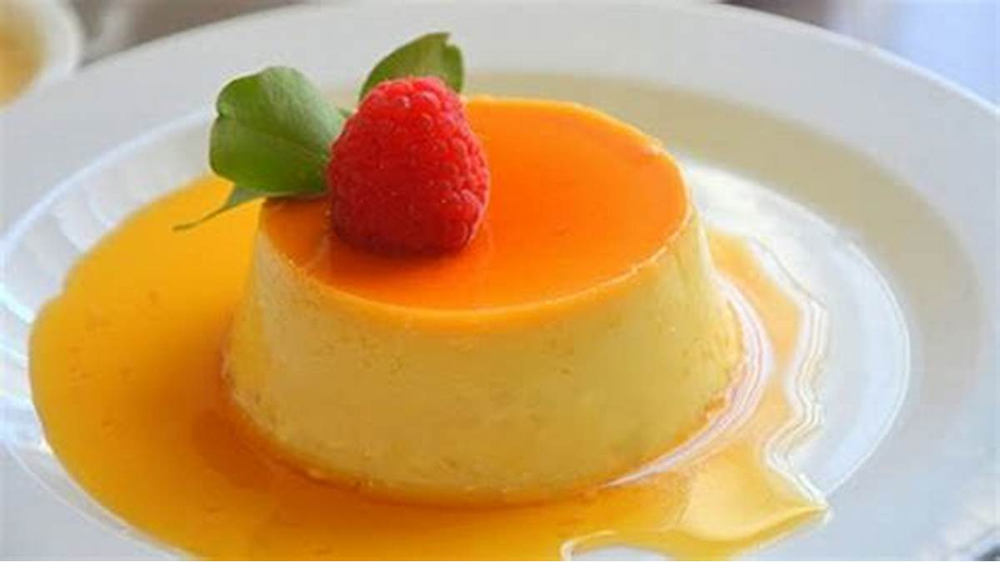
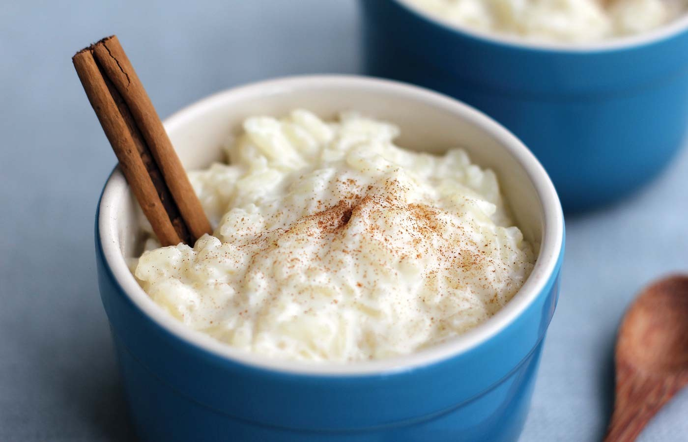
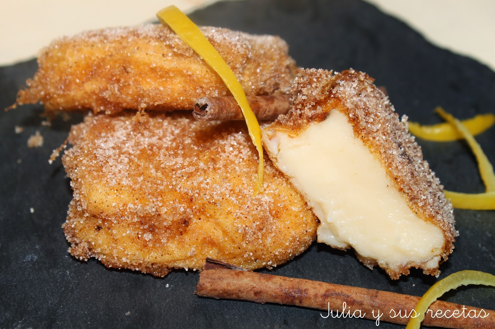
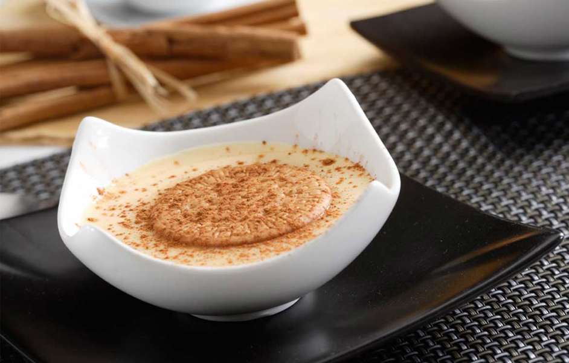
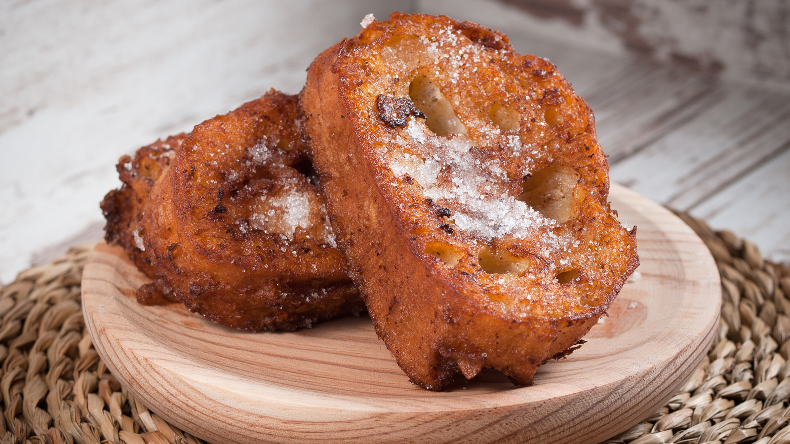
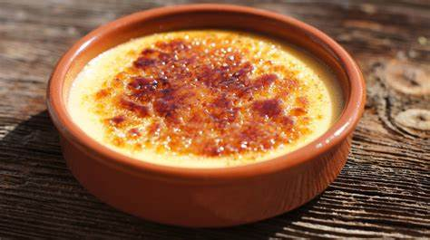
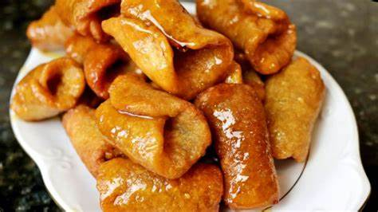
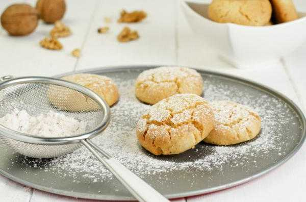

Carta de Platos
Platos Típicos Españoles
Tortilla Española - 8.00€
Tortilla de patatas y cebolla, un clásico de la cocina española.
Paella Valenciana - 15.00€
Arroz con pollo, conejo y verduras, originario de la Comunidad Valenciana.
Gazpacho Andaluz - 7.00€
Sopa fría de tomate y verduras, típica de Andalucía.
Pulpo a la Gallega - 12.00€
Pulpo cocido con pimentón, sal y aceite de oliva, típico de Galicia.
Fabada Asturiana - 10.00€
Guiso de fabes, chorizo, morcilla y lacón, originario de Asturias.
Cochinillo Asado - 18.00€
Lechón asado al horno, típico de Segovia.
Calçots con Romesco - 9.00€
Cebolletas asadas con salsa romesco, típicas de Cataluña.
Pisto Manchego - 8.00€
Guiso de verduras, originario de Castilla-La Mancha.
Merluza a la Koskera - 14.00€
Merluza con espárragos y guisantes, típica del País Vasco.
Rabo de Toro - 16.00€
Estofado de rabo de toro, típico de Córdoba.
Albóndigas en Salsa - 10.00€
Albóndigas de carne en salsa, un plato común en toda España.
Gambas al Ajillo - 12.00€
Gambas salteadas con ajo, un plato popular en toda España.
Patatas Bravas - 7.00€
Patatas fritas con salsa picante, un plato común en los bares españoles.
Calamares a la Romana - 10.00€
Anillos de calamar rebozados y fritos, un plato popular en toda España.
Ensaladilla Rusa - 8.00€
Ensalada de patatas con mayonesa, atún y verduras, un plato común en toda España.
Croquetas de Jamón - 8.00€
Croquetas cremosas de bechamel y jamón, un plato común en toda España.
Pimientos de Padrón - 7.00€
Pimientos verdes fritos, un plato típico de Galicia.
Chorizo a la Sidra - 9.00€
Chorizo cocido en sidra, un plato típico de Asturias.
Salmorejo - 7.00€
Sopa fría de tomate y pan, típica de Andalucía.
Escalivada - 8.00€
Ensalada de verduras asadas, típica de Cataluña.
Platos Típicos del Mundo
Pizza Napolitana - 10.00€
Pizza con tomate, mozzarella y albahaca, originaria de Nápoles, Italia.
Sushi - 15.00€
Rollos de arroz y pescado, originarios de Japón.
Tacos - 8.00€
Tortillas de maíz con varios rellenos, originarias de México.
Carta de Postres
Tarta de Santiago - 4.50€
Una deliciosa tarta de almendras originaria de Galicia.
Flan de Huevo - 3.50€
Un clásico flan de huevo casero con caramelo.
Arroz con Leche - 3.00€
Un cremoso postre de arroz con leche, canela y limón.
Churros con Chocolate - 4.00€
Churros recién hechos servidos con una taza de chocolate caliente.

Leche Frita - 3.50€
Un postre tradicional hecho de leche y harina, frito y espolvoreado con azúcar y canela.
Natillas - 3.00€
Suaves y cremosas natillas de vainilla, servidas con una galleta.
Torrijas - 4.00€
Rebanadas de pan empapadas en leche y huevo, fritas y espolvoreadas con azúcar y canela.
Crema Catalana - 4.50€
Una rica crema pastelera cubierta con una capa de azúcar caramelizado.
Pestiños - 3.50€
Dulces fritos bañados en miel, típicos de Andalucía.
Polvorones - 3.00€
Deliciosos polvorones caseros, perfectos para acompañar con un café.
Carta de Aguas
Agua Mineral Natural Solán de Cabras - 2.50€
Agua mineral natural de origen español con un sabor suave y refrescante.
Agua Mineral Natural Evian - 3.00€
Agua mineral natural de los Alpes franceses, conocida por su pureza y mineralización equilibrada.
Agua Mineral Natural Perrier - 3.50€
Agua mineral natural carbonatada de origen francés, famosa por sus burbujas únicas.
Agua Mineral Natural San Pellegrino - 3.00€
Agua mineral natural con gas de origen italiano, con un toque de burbujas y mineralización única.
Agua Mineral Natural Fiji - 4.00€
Agua mineral natural de las Islas Fiji, conocida por su sabor suave y su botella icónica.
Agua Mineral Natural Voss - 4.50€
Agua mineral natural de Noruega, embotellada en una botella de vidrio cilíndrica distintiva.
Agua Mineral Natural Volvic - 2.50€
Agua mineral natural de Francia, conocida por su origen volcánico y su sabor puro.
Agua Mineral Natural Acqua Panna - 3.00€
Agua mineral natural de Italia, famosa por su pureza y suavidad.
Agua Mineral Natural Icelandic Glacial - 4.00€
Agua mineral natural de Islandia, conocida por su origen glaciar y su equilibrio de minerales.
Agua Mineral Natural Dasani - 2.00€
Agua purificada mejorada con minerales para un sabor puro y fresco.
Agua Mineral Natural SmartWater - 2.50€
Agua destilada con electrolitos añadidos para un sabor puro y crujiente.
Agua Mineral Natural Nestlé Pure Life - 2.00€
Agua purificada que pasa por un proceso de filtración de 12 pasos.
Agua Mineral Natural Aquafina - 2.00€
Agua purificada por un sistema de filtración de siete pasos para garantizar la pureza y el sabor.
Agua Mineral Natural Gerolsteiner - 3.50€
Agua mineral natural de Alemania, conocida por su alto contenido de minerales.
Agua Mineral Natural Badoit - 3.50€
Agua mineral natural con gas de Francia, con un sabor suave y un toque de burbujas.
Agua Mineral Natural Topo Chico - 3.00€
Agua mineral con gas de México, famosa por su sabor refrescante y sus burbujas intensas.
Agua Mineral Natural Mountain Valley - 3.50€
Agua de manantial de Estados Unidos, embotellada en el lugar de origen en las montañas Ouachita.
Agua Mineral Natural Hildon - 4.00€
Agua mineral natural de Inglaterra, conocida por su sabor limpio y equilibrado.
Agua Mineral Natural Lauquen Artes - 4.50€
Agua mineral natural de Argentina, embotellada en el lugar de origen en la Patagonia.
Agua Mineral Natural Blk - 4.00€
Agua mineral con fulvic trace, conocida por su color negro y su sabor limpio y suave.
Carta de Vinos
Vinos Tintos
Rioja Alta Gran Reserva 904 - 50.00€
Vino tinto de la Rioja, conocido por su sabor a frutas rojas y especias.
Vega Sicilia Único - 350.00€
Vino tinto de la Ribera del Duero, famoso por su complejidad y elegancia.
Pingus - 900.00€
Vino tinto de la Ribera del Duero, conocido por su intensidad y profundidad.
Almirez - 20.00€
Vino tinto de Toro, conocido por su sabor a frutas negras y taninos suaves.
Alion - 75.00€
Vino tinto de la Ribera del Duero, famoso por su sabor a frutas negras y su final largo.
Mauro - 30.00€
Vino tinto de Castilla y León, conocido por su sabor a frutas rojas y su equilibrio.
Vinos Rosados
Chivite Las Fincas Rosado - 10.00€
Vino rosado de Navarra, conocido por su sabor a frutas rojas y su frescura.
Enate Rosado - 8.00€
Vino rosado de Somontano, famoso por su sabor a frutas rojas y su acidez equilibrada.
Muga Rosado - 10.00€
Vino rosado de la Rioja, conocido por su sabor a frutas rojas y su final refrescante.
Viña Esmeralda Rosé - 7.00€
Vino rosado de Cataluña, famoso por su sabor a frutas rojas y su dulzura.
>Ramón Bilbao Lalomba - 20.00€
Vino rosado de la Rioja, conocido por su sabor a frutas rojas y su complejidad.
Torres De Casta Rosado - 7.00€
Vino rosado de Cataluña, conocido por su sabor a frutas rojas y su frescura.
Vinos Blancos
Albariño Pazo de Señorans - 15.00€
Vino blanco de Rías Baixas, conocido por su sabor a frutas blancas y su acidez refrescante.
Verdejo José Pariente - 10.00€
Vino blanco de Rueda, famoso por su sabor a frutas blancas y su final largo.
Godello Valdesil - 12.00€
Vino blanco de Valdeorras, conocido por su sabor a frutas blancas y su mineralidad.
Viura Monopole - 8.00€
Vino blanco de la Rioja, famoso por su sabor a frutas blancas y su frescura.
Xarel·lo Albet i Noya - 10.00€
Vino blanco de Penedès, conocido por su sabor a frutas blancas y su acidez equilibrada.
Garnacha Blanca Herencia Altes - 8.00€
Vino blanco de Terra Alta, conocido por su sabor a frutas blancas y su final refrescante.
Cavas
Gramona III Lustros - 30.00€
Cava de Penedès, conocido por su sabor a frutas blancas y su burbuja fina.
Recaredo Terrers - 20.00€
Cava de Penedès, famoso por su sabor a frutas blancas y su complejidad.

Carta de Cervezas
Cervezas Rubias
Estrella Damm - 3.00€
Agua mineral natural de origen español con un sabor suave y refrescante.
Heineken - 3.50€
Cerveza lager holandesa, famosa por su sabor equilibrado y su botella verde.
Corona Extra - 4.00€
Cerveza lager mexicana, ideal para disfrutar con una rodaja de limón.
Budweiser - 3.00€
Cerveza lager estadounidense, conocida como "The King of Beers".
Stella Artois - 3.50€
Cerveza lager belga, famosa por su sabor rico y su copa distintiva.
Cervezas Tostadas
Newcastle Brown Ale - 4.00€
Cerveza ale inglesa, conocida por su sabor a malta y caramelo.
Samuel Adams Boston Lager - 4.50€
Cerveza lager estadounidense, con un sabor equilibrado de malta y lúpulo.
Sierra Nevada Pale Ale - 4.50€
Cerveza ale estadounidense, famosa por su sabor a lúpulo y su aroma floral.
Guinness Draught - 5.00€
Cerveza stout irlandesa, conocida por su sabor a malta tostada y su espuma cremosa.
Hoegaarden - 4.00€
Cerveza blanca belga, con un sabor suave y notas de cilantro y cáscara de naranja.
Cervezas Negras
Guinness Original - 5.00€
Cerveza stout irlandesa, famosa por su sabor a malta tostada y café.
Murphy's Irish Stout - 5.00€
Cerveza stout irlandesa, con un sabor suave y notas de caramelo y chocolate.
Samuel Smith's Oatmeal Stout - 5.50€
Cerveza stout inglesa, con un sabor rico a avena y malta tostada.
Left Hand Milk Stout - 5.50€
Cerveza stout estadounidense, con un sabor dulce a lactosa y café.
Young's Double Chocolate Stout - 6.00€
Cerveza stout inglesa, con un sabor rico a chocolate y malta tostada.
Carta de Licores
Licores del Mundo
Absolut Vodka - 4.00€
Vodka sueco, conocido por su pureza y versatilidad en cócteles.
Baileys Irish Cream - 4.50€
Licor de crema irlandés, famoso por su sabor suave y cremoso.
Campari - 4.00€
Licor italiano, conocido por su sabor amargo y su color rojo vibrante.
Cointreau - 4.50€
Licor de naranja francés, famoso por su sabor dulce y cítrico.
Disaronno Amaretto - 4.50€
Licor italiano, conocido por su sabor a almendra y albaricoque.
Drambuie - 5.00€
Licor escocés, famoso por su sabor a miel y hierbas.
Frangelico - 4.50€
Licor italiano, conocido por su sabor a avellana.
Grand Marnier - 5.00€
Licor de naranja francés, famoso por su sabor cítrico y su toque de coñac.
Jägermeister - 4.00€
Licor alemán, conocido por su sabor a hierbas y especias.
Kahlúa - 4.50€
Licor de café mexicano, famoso por su sabor dulce y café.
Jack Daniel's - 5.00€
Whisky estadounidense, conocido por su sabor suave y su proceso de filtrado a través de carbón de arce.
Bombay Sapphire - 4.50€
Ginebra inglesa, famosa por su sabor a enebro y su botella azul distintiva.
Patrón Silver - 6.00€
Tequila mexicano, conocido por su sabor suave y su botella hecha a mano.
Bacardi Superior - 4.00€
Ron blanco cubano, famoso por su sabor suave y su versatilidad en cócteles.
Grey Goose - 5.50€
Vodka francés, conocido por su sabor suave y su proceso de destilación a partir de trigo francés.
Licores Tradicionales Españoles
Licor 43 - 4.00€
Licor español, conocido por su sabor a vainilla y cítricos.
Anís del Mono - 4.00€
Licor de anís español, famoso por su sabor dulce y su botella distintiva.
Pacharán Navarro - 4.50€
Licor de endrinas español, conocido por su sabor a frutas y su color rojo.
Crema de Orujo - 4.50€
Licor de crema español, famoso por su sabor suave y cremoso.
Hierbas Ibicencas - 5.00€
Licor de hierbas español, conocido por su sabor a hierbas y su origen en Ibiza.
Ron Miel Guanche - 4.50€
Licor de ron y miel español, famoso por su sabor dulce y su origen en Canarias.
Licor de Café Gallego - 4.50€
Licor de café español, conocido por su sabor a café y su origen en Galicia.
Agua de Valencia - 5.00€
Cóctel español, famoso por su sabor a cítricos y su origen en Valencia.